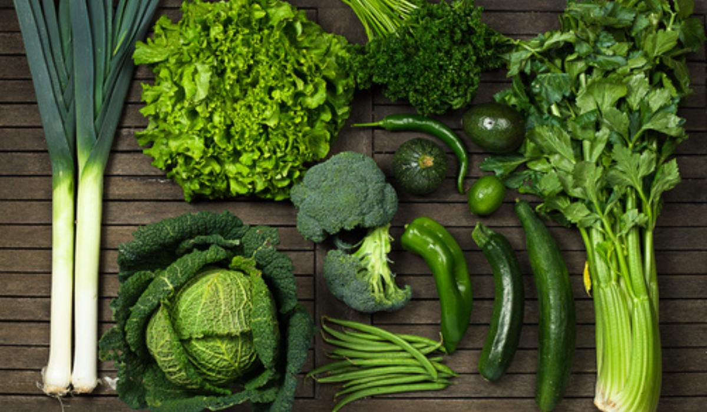

Our Network of Sustainable Farms & Products

Green Leaf Organics
Specializing in leafy greens, herbs, and root vegetables. A fully organic-certified farm.
Certified OrganicMangga King Farms
Home to the sweetest Carabao Mangoes and other tropical fruits, grown with low-impact methods.
Tropical Fruits
Coastal Aqua Culture
Sustainable, freshwater and brackish water aquaculture for local Tilapia and Milkfish supply.
Seafood & FishThe Honeycomb Apiary
Producers of raw, unprocessed honey and beeswax, contributing to local pollination efforts.
Specialty Goods
Nipa Palm Leaves
Specializing in the sustainable harvesting of nipa palm leaves for traditional roofing and crafts.
Nipa Palm
Golden Yolk Farms
Pasture-raised, heritage-breed brown eggs. Hens are fed a certified non-GMO, soy-free diet and are moved to fresh pasture daily.
Fresh Eggs